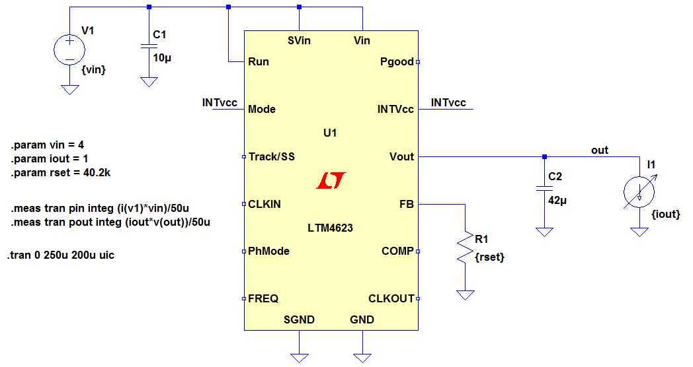

Example 2
In this example, the efficiency of a LTM6423 will be measured vs Vin and Iout.

Import modules. For the plot Plots and GR modules are used.
using Printf
using LTspice, Plots
gr()Plots.GRBackend()Create an instance of LTspiceSimulation.
example2 = LTspiceSimulation("example2.asc",tempdir=true)LTspiceSimulation:
circuit path = C:\Users\Chris\AppData\Local\Temp\jl_3827.tmp\example2.asc
Parameters
vin = 4.0
iout = 1.0
rset = 40200.0
Measurements
pin
poutDefine the values of vin and iout to test.
vin_list = 6.0:1.5:21.0
iout_list = 0.5:0.5:3.00.5:0.5:3.0Loop over vin and iout measuring efficiency. Vout is fixed at 3.3V.
rfb(vout)= 0.6*60.4e3/(vout-0.6)
function compute_efficiency_array(vin_list, iout_list, vout)
efficiency = Array{Float64}(undef,length(vin_list),length(iout_list))
for vin_index in eachindex(vin_list)
for iout_index in eachindex(iout_list)
(pin,pout) = example2(vin_list[vin_index],iout_list[iout_index],rfb(vout))
efficiency[vin_index,iout_index] = -pout/pin
end
end
return efficiency
end
@time efficiency = compute_efficiency_array(vin_list, iout_list, 3.3)595.327605 seconds (1.33 M allocations: 68.676 MiB, 0.01% gc time)
11×6 Array{Float64,2}:
0.942597 0.941835 0.93738 0.926938 0.915557 0.906728
0.932166 0.936341 0.935963 0.920241 0.915076 1.00214
0.916127 0.921513 0.927221 0.919028 0.914404 0.999531
0.903634 0.915079 0.917889 0.916682 0.907679 1.00265
0.881499 0.896956 0.917042 0.90699 0.901654 1.00255
0.865387 0.888338 0.900415 0.905577 0.894867 0.978265
0.848996 0.877573 0.888105 0.897416 0.890482 0.985415
0.84216 0.868172 0.883775 0.882923 0.887409 0.982844
0.814881 0.850709 0.875154 0.883193 0.879397 0.961094
0.809717 0.837905 0.866457 0.872057 0.878294 0.949421
0.792482 0.827322 0.852774 0.866719 0.863655 0.942029Plot the results.
plt = plot()
for iout_index in eachindex(iout_list)
plot!(plt,vin_list,efficiency[:,iout_index],label = "Iout="*@sprintf("%2.2f",iout_list[iout_index]))
end
plot!(plt, title = "LTM6423 Efficiency @ Vout = 3.3V")
plot!(plt, xlabel = "Vin (V)", ylabel = "Efficiency")